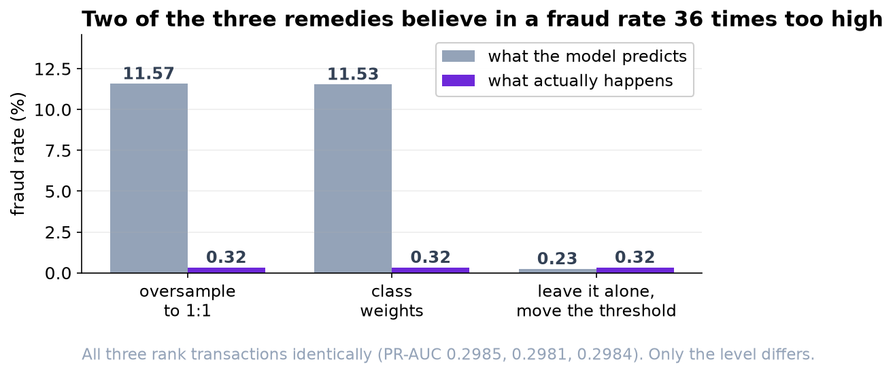
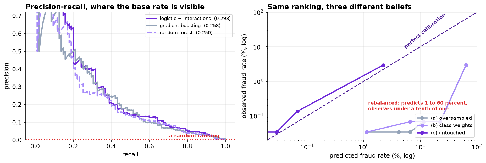
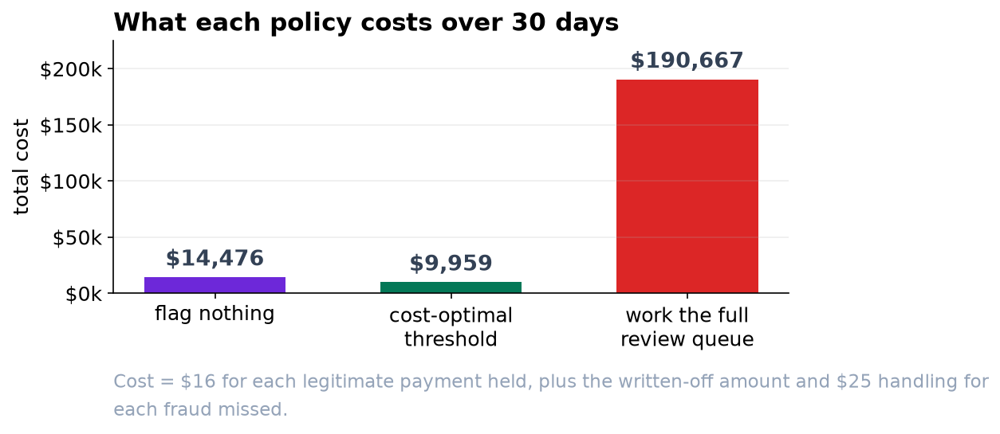

Imbalanced Classification: Leakage, Ranking, Calibration and Cost
Three standard answers to a 0.32 percent positive rate rank identically to three decimal places and differ 36-fold on the level. Only one of them can be multiplied by a dollar amount.
1. Data and cleaning
The export contained 120,400 rows. Three faults were removed before any modeling: a duplicated export block (400 rows), 306 rows carrying a distance sentinel of -1 where geolocation had failed, and 138 zero-amount rows that are authorization holds rather than purchases. That leaves 119,556 transactions with 318 confirmed frauds, a rate of 0.266 percent.
Flagging nothing is 99.734 percent accurate. Accuracy is not reported again in this analysis.
2. Split and leakage
The split is temporal: days 1 to 90 for training (89,973 transactions, 223 frauds) and days 91 to 120 for testing (29,583 transactions, 95 frauds, 0.3211 percent). A random split would allow the model to learn from transactions that had not yet occurred.
| Feature set | ROC-AUC | PR-AUC | Reading |
|---|---|---|---|
| Honest features only | 0.9604 | 0.2984 | 93× the base rate |
Plus chargeback_code_filed | 0.9997 | 0.9818 | not available at decision time |
The chargeback column is populated weeks after the transaction, once a case has been worked. It is a leak. The operational test applied throughout is whether a value would have existed, with that value, at the moment the prediction is required. Leakage does not present as an error; it presents as an implausibly good result, and a PR-AUC of 0.98 on a fraud problem is a symptom rather than a finding.
3. Model comparison
| Model | ROC-AUC | PR-AUC | Lift | Brier |
|---|---|---|---|---|
| Logistic, additive | 0.9554 | 0.2752 | 86× | 0.00269 |
| Logistic + two interactions | 0.9604 | 0.2984 | 93× | 0.00264 |
| Gradient boosting | 0.9565 | 0.2584 | 80× | 0.00272 |
| Random forest | 0.9364 | 0.2496 | 78× | 0.00285 |
The linear model wins, and the ensembles were not handicapped: two genuine interactions exist in the data-generating process, a new device on a card-not-present sale and a foreign merchant overnight, so there is real non-additive structure available. The ensembles cannot recover it from 223 positives. Sample size for a flexible model is counted in positives, not rows.
ROC-AUC separates the four models by 0.024 and PR-AUC by 0.049. With a false positive rate whose denominator is nearly 30,000, ROC-AUC is close to insensitive here and should not be the headline.
4. Imbalance remedies, judged on calibration
| Approach | PR-AUC | Brier | Mean predicted | Observed | Ratio |
|---|---|---|---|---|---|
| (a) Random oversampling to 1:1 | 0.2985 | 0.05136 | 11.571% | 0.3211% | 36.0× |
| (b) Class weights | 0.2981 | 0.05109 | 11.531% | 0.3211% | 35.9× |
| (c) Untouched, tuned threshold | 0.2984 | 0.00264 | 0.233% | 0.3211% | 0.7× |
The three PR-AUCs agree to three decimal places because all three fit the same model to the same information. Resampling and class weighting do not change the ordering; they change the prior the fitted model encodes, which no ranking metric can detect. The Brier scores differ by a factor of twenty, and the mean predicted probability by a factor of thirty-six.
That is decisive here because the downstream step multiplies the predicted probability by a transaction amount to form an expected loss. An inflated probability makes that product meaningless. Where a decision needs only an ordering, resampling is harmless; where it needs a probability, the remedy has removed the thing being used. Recalibration (Platt or isotonic) restores it and is a second step that is easy to forget.

5. Threshold from the cost matrix
Costs supplied by operations before modeling: a false positive is $16 ($4 analyst time, $12 estimated customer cost); a false negative is the transaction amount written off plus $25 of handling. The per-transaction component of the miss cost means no fixed exchange rate between the two errors exists, which rules out Youden's index, the F1 peak and any other curve-derived rule.
| Threshold | Flagged | Caught | Missed | Cost, 30 days |
|---|---|---|---|---|
| 0.0020 | 2,196 | 85 | 10 | $35,011 |
| 0.0100 | 887 | 67 | 28 | $16,976 |
| 0.0500 | 251 | 44 | 51 | $10,402 |
| 0.0883 | 146 | 37 | 58 | $9,975 |
| 0.2000 | 58 | 24 | 71 | $11,195 |
| 0.4000 | 26 | 17 | 78 | $11,609 |
A finer sweep locates the minimum at 0.0883 with 145 flags and a cost of $9,959, against $14,476 for flagging nothing, a 31 percent reduction. The curve is shallow: the interval from roughly 0.04 to 0.15 is within a few hundred dollars of the optimum, so the policy is not sensitive to the exact threshold.
The optimal policy misses 58 of 95 frauds. This is the correct solution to the stated objective and will be read as a failure by any process measured on detection rate.

6. The capacity constraint, tested
The review team's stated capacity is 400 cases a day, 12,000 over the test window. Setting the threshold to fill it (0.00012) catches 93 of 95 frauds at a cost of $190,667, which is 13 times the cost of having no model at all. Approximately 11,900 of the 12,000 reviews are of legitimate transactions at $16 each.
Capacity is therefore not the binding constraint; the unit cost of a false positive is. The cost-optimal policy uses about one percent of available capacity, which inverts the usual framing of the operational question.

7. Limitations
The evaluation is a single temporal split, so the test estimate is one draw rather than a distribution; repeating it across rolling windows would put an interval on the 31 percent saving. The $12 customer-annoyance figure is an estimate rather than a measurement, and the threshold moves with it, though the shallowness of the curve limits how far. Fraud is adversarial and the patterns learned from days 1 to 90 will decay, so both the model and the threshold need re-measurement on a schedule.
Finally, the distribution of false positives is not uniform across customers. Travel, late-night purchases and a recently changed device all raise the predicted probability, and all three are ordinary behavior. The $16 in the cost matrix treats every false positive as equivalent, which is a modeling convenience rather than a fact.